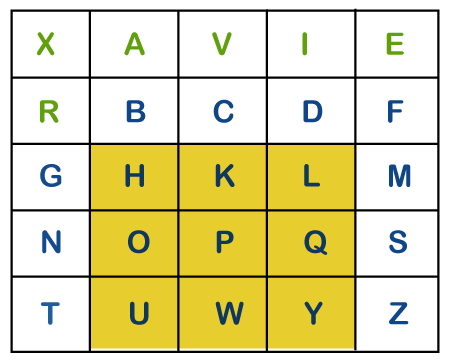

Wardha Road, Gavsi Manapur, Nagpur -441108
NAAC accredited with grade ‘A’
An Autonomous Institute
Department of Computer Engineering
Play Fair Cipher
Playfair cipher is an encryption algorithm to encrypt or encode a message. It is the same as a traditional cipher. The only difference is that it encrypts a digraph (a pair of two letters) instead of a single letter.
It initially creates a key-table of 5*5 matrix. The matrix contains alphabets that act as the key for encryption of the plaintext. Note that any alphabet should not be repeated. Another point to note that there are 26 alphabets and we have only 25 blocks to put a letter inside it. Therefore, one letter is excess so, a letter will be omitted (usually J) from the matrix. Nevertheless, the plaintext contains J, then J is replaced by I. It means treat I and J as the same letter, accordingly.
Since Playfair cipher encrypts the message digraph by digraph. Therefore, the Playfair cipher is an example of a digraph substitution cipher.
Advantages of Playfair Cipher
Limitations of Playfair Cipher
1.Only 25 alphabets are supported.
2.It does not support numeric characters.
3.Only either upper cases or lower cases are supported.
4.The use of special characters (such as blank space, newline, punctuations, etc.) is prohibited.
5.It does not support other languages, except English.
6.Encryption of media files is also not supported.
Playfair Cipher Encryption Rules
1. First, split the plaintext into digraphs (pair of two letters). If the plaintext has the odd number of letters, append the letter Z at the end of the plaintext. It makes the plaintext of even For example, the plaintext MANGO has five letters. So, it is not possible to make a digraph. Since, we will append a letter Z at the end of the plaintext, i.e. MANGOZ.
2. After that, break the plaintext into digraphs (pair of two letters). If any letter appears twice (side by side), put X at the place of the second occurrence. Suppose, the plaintext is COMMUNICATE then its digraph becomes CO MX MU NI CA TE. Similarly, the digraph for the plaintext JAZZ will be JA ZX ZX, and for plaintext GREET, the digraph will be GR EX ET.
3. To determine the cipher (encryption) text, first, build a 5*5 key-matrix or key-table and filled it with the letters of alphabets, as directed below:
Fill the first row (left to right) with the letters of the given keyword (ATHENS). If the keyword has duplicate letters (if any) avoid them. It means a letter will be considered only once. After that, fill the remaining letters in alphabetical order. Let's create a 5*5 key-matrix for the keyword ATHENS.
Note that in the above matrix any letter is not repeated. The letters in the first row (in green color) represent the keyword and the remaining letters sets in alphabetical order.
4. There may be the following three conditions:
i) If a pair of letters (digraph) appears in the same row
In this case, replace each letter of the digraph with the letters immediately to their right. If there is no letter to the right, consider the first letter of the same row as the right letter. Suppose, Z is a letter whose right letter is required, in such case, T will be right to Z.
ii) If a pair of letters (digraph) appears in the same column
In this case, replace each letter of the digraph with the letters immediately below them. If there is no letter below, wrap around to the top of the same column. Suppose, W is a letter whose below letter is required, in such case, V will be below W.
iii) If a pair of letters (digraph) appears in a different row and different column
In this case, select a 3*3 matrix from a 5*5 matrix such that pair of letters appear in the 3*3 matrix. Since they occupy two opposite corners of a square within the matrix. The other corner will be a cipher for the given digraph.
In other words, we can also say that intersection of H and Y will be the cipher for the first letter and
Suppose, a digraph is HY and we have to find a cipher for it. We observe that both H and Y are placed in different rows and different columns. In such cases, we have to select a 3*3 matrix in such a way that both H and Y appear in the 3*3 matrix (highlighted with yellow color). Now, we will consider only the selected matrix to find the cipher.

Now to find the cipher for HY, we will consider the diagonal opposite to HY, i.e. LU. Therefore, the cipher for H will be L, and the cipher for Y will be U.
Playfair Cipher Decryption
The decryption procedure is the same as encryption but the steps are applied in reverse order. For decryption cipher is symmetric (move left along rows and up along columns). The receiver of the plain text has the same key and can create the same key-table that is used to decrypt the message.
Let's see an example of Playfair cipher.
Example of Playfair Cipher
Suppose, the plaintext is COMMUNICATION and the key that we will use to encipher the plaintext is COMPUTER. The key can be any word or phrase. Let's encipher the message COMMUNICATION.
1. First, split the plaintext into digraph (by rule 2) i.e. CO MX MU NI CA TE.
2. Construct a 5*5 key-matrix (by rule 3). In our case, the key is COMPUTER.
3. Now, we will traverse in key-matrix pair by pair and find the corresponding encipher for the pair.
Therefore, the plaintext COMMUNICATE gets encipher (encrypted) into OMRMPCSGPTER.
created with
Website Builder Software .